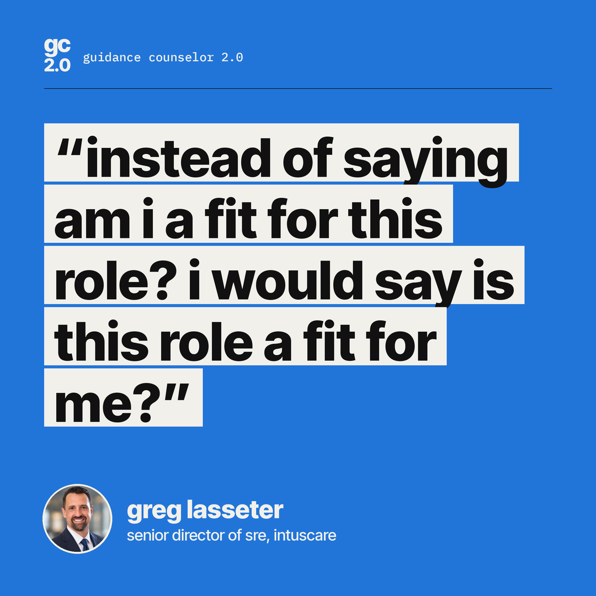

he built an ai engine for his job search
guest: greg lasseter, senior director of site reliability engineering at intuscare
greg, thanks for coming on. everything you need to share the episode is on this page: clips, a one-pager, a quote card, and captions already written. download, paste, post.
watch on youtube > listen to the podcast > 5-bullet recap >
1. clips
vertical 1080x1920, captioned. good for linkedin, x, reels, tiktok and shorts.
01. first clip
on its way, lands here soon02. second clip
on its way, lands here soon2. one-pager + quote card


quote card png
3. captions
written in your voice. tweak anything.
linkedin post
Had a great time joining Taylor Desseyn on Guidance Counselor 2.0 to walk through how I used AI as a working partner through my whole job search. A few things I shared: > Measure progress by how many applications move to a screen, not by how many you send > Flip the fit question. Instead of "am I a fit for this role?", ask "is this role a fit for me?" > After a cold reach out, follow up once a week later, then move on > Find out who's interviewing you and use their LinkedIn experience to prep > In interviews, take a few seconds, give your verdict first, then explain Watch it here: https://www.youtube.com/watch?v=O3v3D9S8cRU&utm_source=gc2dot0&utm_medium=guest&utm_campaign=northstar Thanks for having me, Taylor!
after pasting, type @taylor desseyn and pick him from the list so the tag links.
x post
Joined @tdesseyn on @gc2dot0 to talk about the AI engine I built for my job search. Biggest shift: stop asking "am I a fit for this role?" and ask "is this role a fit for me?" Watch: https://www.youtube.com/watch?v=O3v3D9S8cRU&utm_source=gc2dot0&utm_medium=guest&utm_campaign=northstar
instagram caption
How I built an AI engine for my job search. Got into it with @tdesseyn on @guidancecounselor2.0: > Measure progress by movement to screening, not applications sent > Ask "is this role a fit for me?" > One follow up a week later, then move on > Prep with your interviewer's LinkedIn experience Full episode is up on YouTube.
ig captions can't hold links. if you add the episode link to your bio or a story link sticker, use the one below.
episode link: https://www.youtube.com/watch?v=O3v3D9S8cRU&utm_source=gc2dot0&utm_medium=guest&utm_campaign=northstar
4. tags